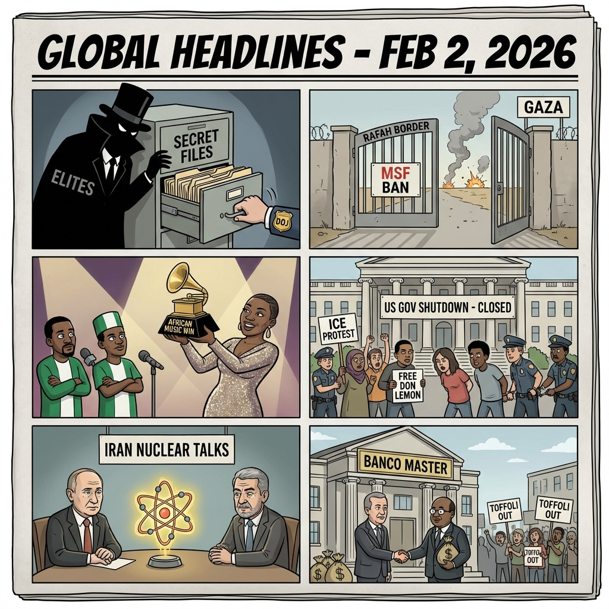

The Daily Globe: DOJ Excludes Graphic Evidence from Epstein Files, Epstein Files Dump Reignites Scandals, and CPI Requested for Banco Master Corruption Scandal
Published on 2026-02-03

World
- DOJ Excludes Graphic Evidence from Epstein Files
Outrage over U.S. Department of Justice excluding images of death, physical abuse, and injury from the latest Jeffrey Epstein document dump, fueling demands for full transparency and arrests of involved elites.
- Gaza Rafah Crossing Reopens but MSF Banned
Limited reopening of Rafah crossing for aid and evacuations hailed as fragile progress, but Israel's ban on Doctors Without Borders operations and ongoing airstrikes draw sharp humanitarian criticism.
- Grammy Awards African Music Controversy
South African artist Tyla's win in Best African Music Performance sparks backlash in Nigeria over snubs to artists like Burna Boy and Davido, with accusations of bias in Afrobeat representation.
- Ukraine-Russia Peace Talks Delayed Amid Strikes
Talks pushed to Feb 4-5 after Russian drone strikes kill civilians, highlighting stalled diplomacy and ongoing war casualties.
USA
- Epstein Files Dump Reignites Scandals
Over 5 million pages released alleging trafficking networks implicating high-profile figures, including scrutiny on President Trump's associations and calls for investigations.
- U.S. Partial Government Shutdown Day 3
Funding disputes delay jobs reports and heighten economic fears, with partisan blame over immigration and spending.
- Don Lemon Arrested at Anti-ICE Protest
Former CNN journalist detained during Portland protest, sparking debates on press freedom, religious rights, and federal immigration enforcement.
- U.S.-Iran Nuclear Talks Amid Military Prep
High-stakes negotiations set amid U.S. buildup and Iran's defiant rhetoric, raising escalation fears.
Brazil
- CPI Requested for Banco Master Corruption Scandal
Deputado Rodrigo Rollemberg gathers 201 signatures for CPI on what is called Brazil's largest corruption case involving bank fraud.
- Banco Central Omission in Banco Master Fraud Exposed
Documents reveal BC identified fraud in 2025 but halted investigation, described as 'conscious omission' with links to STF minister Dias Toffoli.
- Petition for Dias Toffoli Resignation Over Banco Master
Calls for STF minister to step down from case relatoria amid alleged involvement, with political fallout for PL party and DF governor.
- Planalto Assesses Lula Image Damage from Banco Master
Government and PT prioritize polling impact of scandal on president's popularity rather than investigation.
Topic Index
- epstein-coverup
- elite-impunity
- gaza-humanitarian
- ukraine-war
- grammy-african-bias
- us-government-shutdown
- immigration-protests
- us-iran-tensions